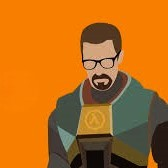

Nacido en Seattle, Washington, Estados Unidos. Gordon Freeman presenta un temprano interés en la física teórica, como la mecánica cuántica y la relatividad. Sus primeras inspiraciones son Albert Einstein, Stephen Hawking y Richard Feynman. Él no tiene dependientes y es un graduado del MIT, habiendo obtenido un doctorado en física teórica. Después de graduarse del MIT, Gordon viaja a Austria, y observa una serie de experimentos de teletransporte realizados por el Instituto de Física Experimental en Innsbruck. Con el tiempo, se convierte en decepción debido a la lentitud de la investigación de teletransporte en el mundo académico y comienza a buscar un trabajo fuera del sector de la educación. Por coincidencia, el mentor de Freeman del MIT el Dr. Kleiner se ha hecho cargo de un proyecto de investigación en un centro de investigación, propiedad del gobierno conocido como el Centro de Investigación Black Mesa y ofrece a Freeman un trabajo. Él acepta, con la esperanza de que al menos parte de la inmensa financiación se destinará a usos civiles de la astrofísica y la computación cuántica.

El 16 de mayo del 200- a las 8:47, Freeman comienza su viaje en tranvía hacia su lugar de trabajo y está a 30 minutos de retraso. Al llegar al departamento de Materiales anómalos él y su equipo realizan un experimento con la muestra GG-3883 en el Espectrómetro de Anti-Materia. El experimento sale mal y se desencadena una cascada de resonancia. Como resultado, el continuo espacio-tiempo se rompe, permitiendo a formas de vida alienígenas entrar en Black Mesa. De inmediato comienzan a matar a los seres humanos que pueden encontrar.
en 2009, los usuarios de GameSpot votaron a Gordon Freeman como el "Héroe más grande de videojuego de todos los tiempos", derrotando a Mario solo en la ronda final. Gordon Freeman ganó con un 55.8% de los votos, y en recompensa a su fidelidad, Valve rebajo todos los videojuegos de la saga Half-Life en 55.8% de su precio habitual durante un fin de semana a través de su plataforma digital Steam.
El modelo original de Freeman tenía una barba completa y desarreglada que le valió el apodo de "Ivan el Motociclista Espacial" pero se elimino ya que a los programadores les parecia un ''vagabundo''. La barba, finalmente, se convirtió en una perilla con estilo, mientras que los lentes también pasaron por varios cambios. En el videojuego Grand Theft Auto: San Andreas se puede encontrar la palanca de Freeman. La única forma de conseguirla es en la misión "Black Project", ya que es la única misión donde se puede acceder al Área Restringida (aunque también se puede entrar en cualquier momento con el bug de Freeway). En uno de los laboratorios del Área 69, se puede observar que sobre una mesa se encuentra la famosa palanca de Freeman, haciendo referencia a este videojuego. El primer nombre de "Gordon" es un apellido escocés que fue derivado originalmente de un topónimo que significa "cerro grande". "Freeman" es un apellido Inglés común, que originalmente se refería a una persona que ha nacido libre, o en otras palabras no era un siervo y no están sujetos a la voluntad de otro. Referencia probablemente a la lucha de Gordon, la cual está dirigida a enemigos teóricamente más poderosos, los cuales intentan someter a la raza humana. Este es un título bastante irónico que se dará a Gordon, ya que él esta "involuntariamente" al servicio de G-Man. Por otro lado, sí tiene sentido el Freeman establecido por los Vortigaunts, a quienes Gordon liberó de Nihilanth en Half-Life. En Half-Life, la foto de un bebé con una mano adulta haciendo un "pulgar encima de él" se puede encontrar en el armario de Freeman, cerca del lugar donde consigue el traje. A pesar de que el bebé de la foto es la hija de Harry E. Teasley, Isabel. La foto fue definida oficialmente como un easter egg colocado por el diseñador de niveles, Marc Laidlaw ofreció la idea de que podría ser un bebé relativo a Gordon, como una sobrina o sobrino. Aunque se piensa comúnmente que Gordon es mudo, esto se contradice en el manual de Half-Life para PlayStation 2. La imagen de la carta de Gordon Freeman de aceptación al Equipo de Investigación de Black Mesa menciona una "reciente conversación telefónica" entre Freeman y alguien en Black Mesa. En Blue Shift y Opposing Force, el modelo 3D de Gordon no tiene una animación de muerte, si él muere, se va a reproducir la animación de pie en su lugar. Sin embargo, su cuerpo puede ser destruido. En el videojuego Splinter Cell: Chaos Theory, Anna Grimsdottir comenta al protagonista Sam Fisher que las "palancas son para personajes de videojuegos geek", burlándose del hecho que Gordon Freeman es un científico de profesión. En el videojuego Call of Duty: United Offensive, dos soldados estadounidenses se muestran corriendo de lado a lado. A la izquierda, Pvt. Gordon, y en la derecha, Pvt. Freeman. En el videojuego S.T.A.L.K.E.R.: Shadow of Chernobyl, el jugador puede encontrar el cuerpo de un científico llamado "Gordon Freeman", cuyo PDA hace menciones de Black Mesa, Ciudad 17, y una palanca. En el videojuego Metro 2033, un esqueleto se puede encontrar que tiene puestas un par de gafas y una palanca a su lado. En el videojuego Left 4 Dead 2, durante la campaña contenido de descarga (DLC) "The Passing", Louis a veces dirá: "¡Hombre, me siento como Gordon Freeman!" cuando está equipado con una palanca. En Opposing Force, se puede apreciar una foto de Freeman como empleado del mes, lo cual resulta raro, ya que en la historia original llevaba una semana trabajando en Black Mesa. En Half-Life 2: Episode One, Alyx Vance dice que el Doctor Kleiner le comentó que cuando olvidaba las llaves dentro de su oficina en Black Mesa, Gordon y Barney solían hacer carreras en los conductos de ventilación para abrirla, dando a entender que Gordon ya tenía experiencia en escabullirse en los ductos antes de el Incidente de Black Mesa.
WIKIPEDIA DE HALF LIFE